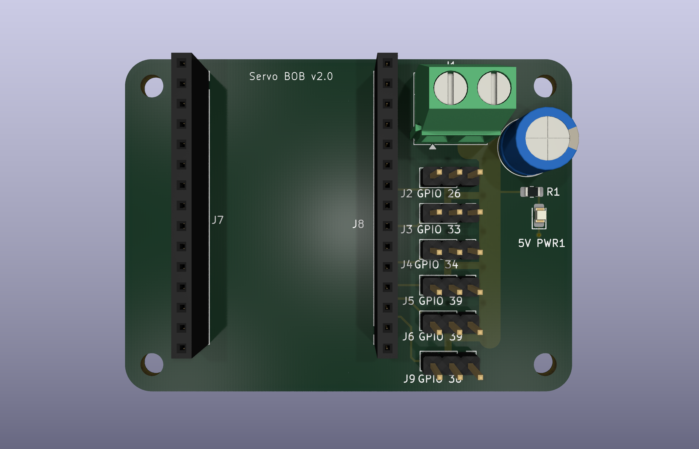
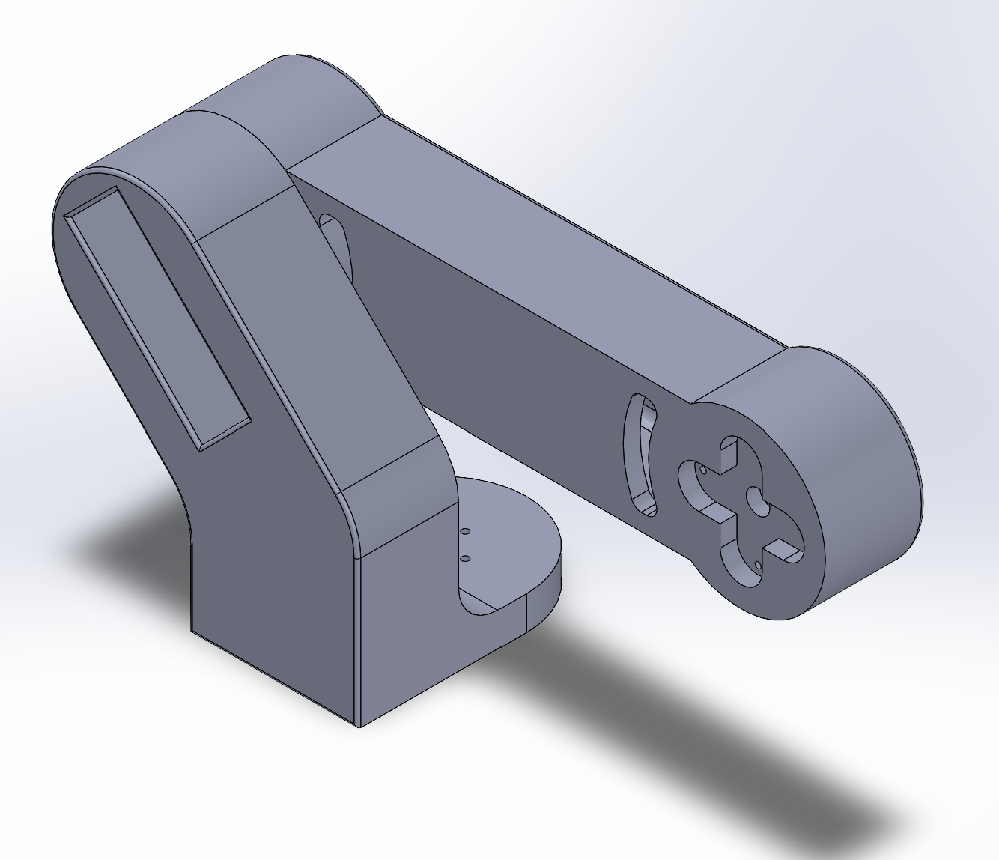

Overview
A personal project to build a 5 degree-of-freedom robotic arm, covering the electronics, the mechanical structure, and the control software. It's an active project, so this page covers what's built so far.
Servo Breakout Board
The arm is actuated by six MG996R servos. Rather than wire each one directly to a microcontroller, I designed a custom breakout board in KiCad that sits on an ESP32 and handles signal and power routing for all six from a single connector layout.
- Designed the board around an ESP32, consolidating six sets of servo wiring onto one board.
- Took the design through three revisions in KiCad, refining connector placement and routing with each pass.
- Ordered the third revision for fabrication.

Mechanical Structure
In parallel, I've been modeling the arm in SolidWorks and 3D-printing sections of it to test fit, range of motion, and how the servos mount and load each joint. A good portion of the arm is modeled, with several joints already prototyped in print.

Control Code
On the software side, I've written Arduino firmware to drive individual servos from the breakout board, plus a small Python script that handles serial communication between a computer and the ESP32 for sending commands and reading status back.